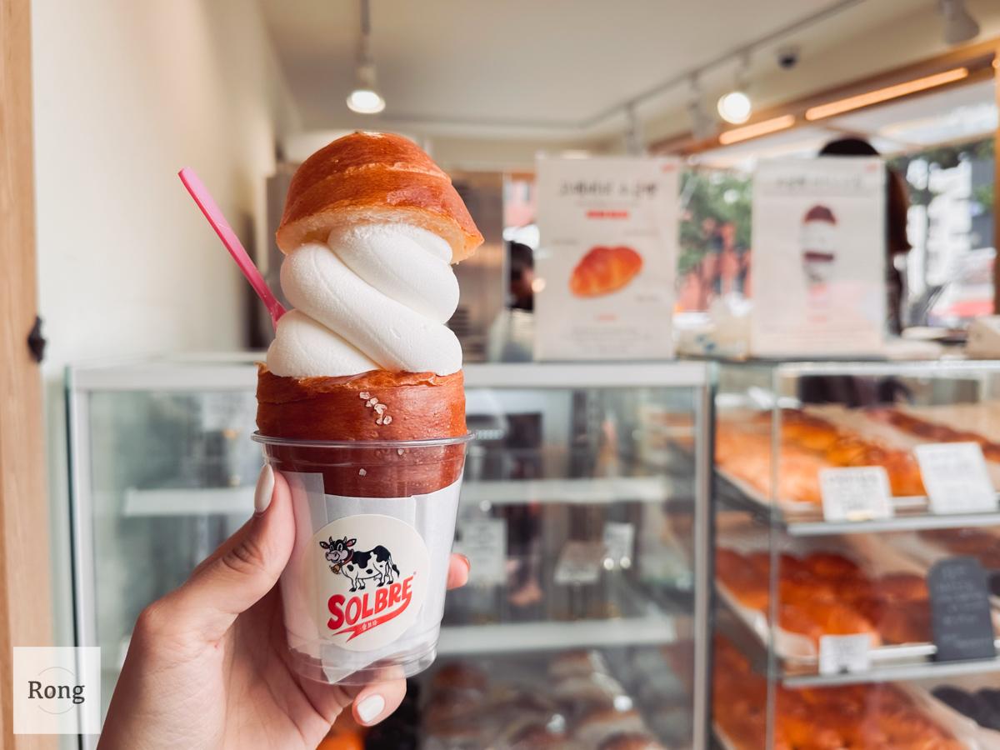
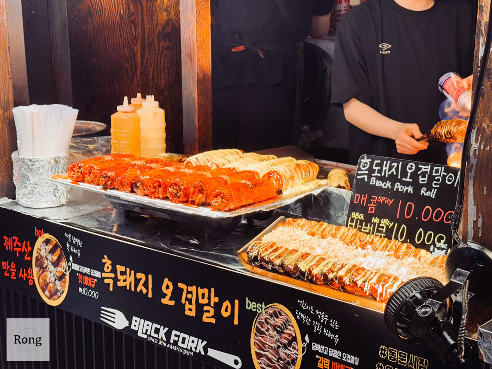
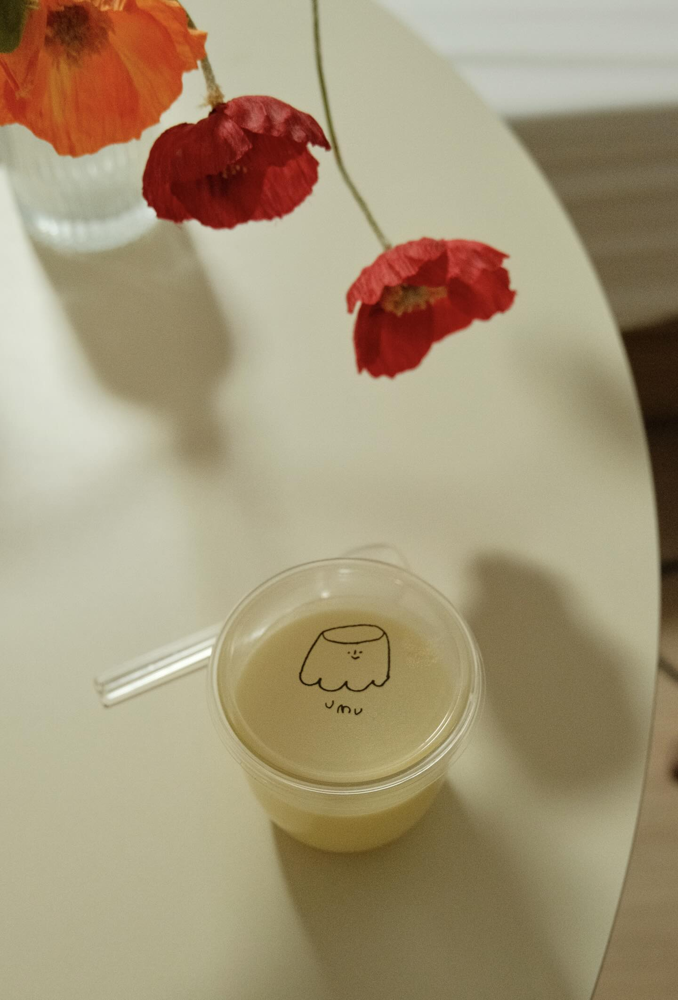
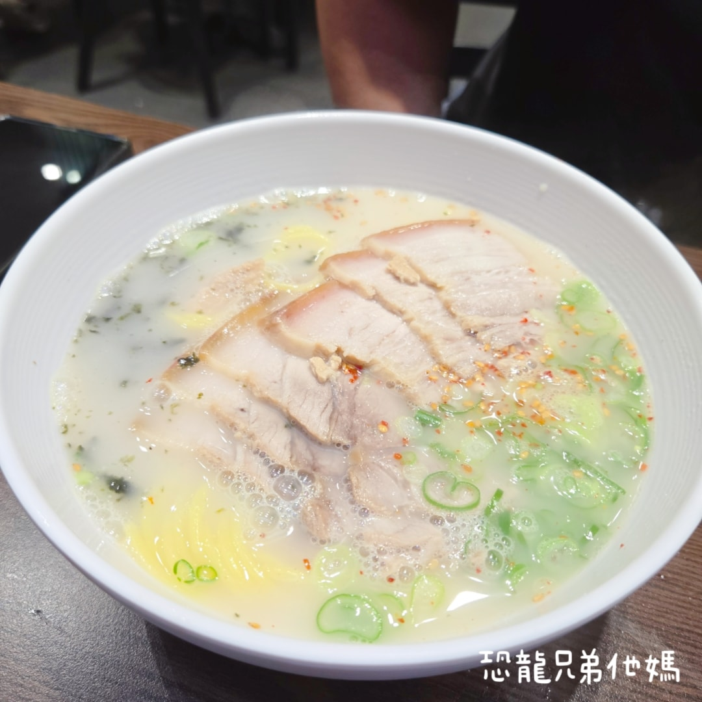
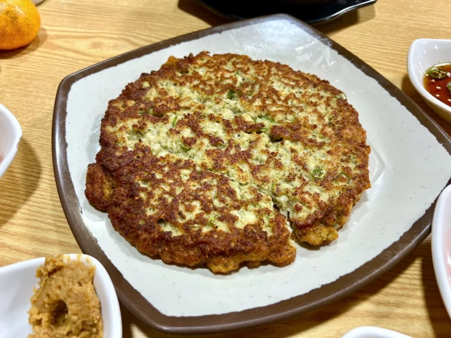
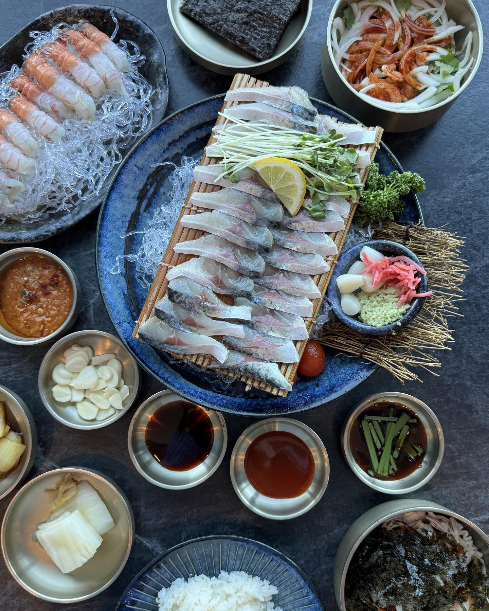
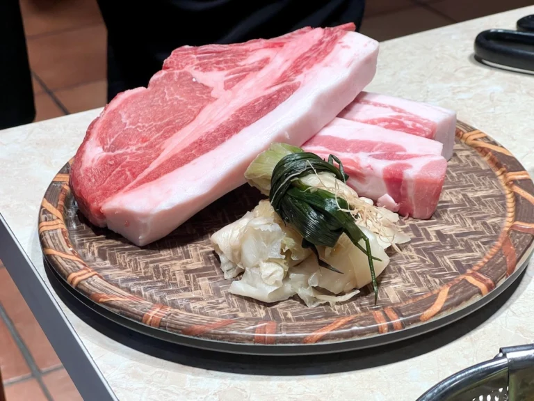
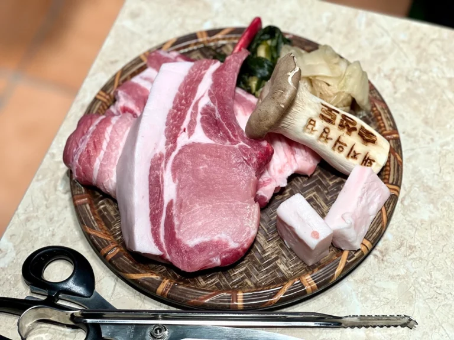
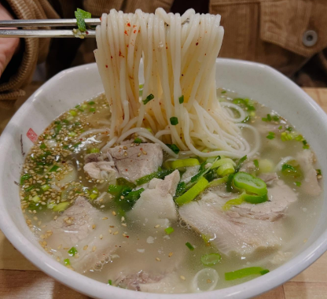

濟州島行程
🍊
Day 01 濟州島北部
✈️ CJU 濟州國際機場抵達
航班：真航空 LJ764
機型：波音 737-900 | 經濟艙 (無餐點)
🛫 出發地點：台北桃園國際機場 (TPE) 第 1 航廈
🛫 起飛時間：03:00
🛬 抵達地點：濟州國際機場 (CJU)
🛬 抵達時間：06:10
🚗 取車：租車公司接駁
租車公司：樂天
預約車型：一台7人一台5人
📄 必備物品：台灣駕照正本 + 國際駕照 + 護照


🧺 東門傳統市場
🗺️Map
🍢
美食推薦必吃：
現榨橘子汁8號門
整顆橘子現榨不加水，酸甜解膩
橘子糖葫蘆8號門
整顆濟州橘子做成的多汁糖葫蘆

SOLBRE 鹽麵包冰淇淋 3號門旁
冰淇淋濃郁、麵包外脆內鬆

黑豬肉五花肉卷
可選辣味或燒烤原味，香氣十足

糯米甜油糕
糯米粉與馬格利酒發酵後油炸製成

UMU布丁3號門出來(步行約 2～3 分鐘)
採用濟州海女採集的海藻製成、口感滑順入口即化，且甜度適中不膩。
特色與口感：天然海藻、水感質地、盡快食用
推薦口味：經典原味、濟州柑橘、花生巧克力
💡
逛街提醒：幾乎都可以刷卡了，但還是記得帶少量現金
🎁 網紅爺爺伴手禮店
📱IG橘子爺爺
以濃厚濊州文化象徵「石頭爺爺」為造型的果汁，已經成為濟州島最具代表性的伴手禮之一

FRUNACK 柑橘巧克力
新鮮柑橘與濃郁的歐式巧克力，創造出層次豐富的獨特口感

柑橘油蜜果
使用橙汁、蜂蜜和麵粉精心製作，經過油炸後滾上香脆米香，創造出獨特的口感層次

O’sulloc 抹茶醬
以濟州島出產的優質綠茶為基礎，加入新鮮牛奶調製而成
📍 以「東門市場」為出發點
🍽️ 姐妹noodles
📍Map
⏰09:00 - 18:00 (14:30-16:00 休息 / 17:50 最後點餐)
📍離東門市場 5 分鐘

豬肉湯麵
黃色麵條，如白色湯頭鹹度適中
⏰6:00~22:00
📍離東門市場 10 分鐘
蕨菜豬肉湯 고사리육개장
將豬肉絲與蕨菜放入濃郁豬骨高湯熬煮 24 小時，口感非常濃稠像肉羹

馬尾藻湯 몸국
以豬肉與馬尾藻加入豬骨湯熬製，海藻能去除肉腥味並帶來清甜口感

綠豆煎餅 녹두빈대떡
使用磨碎的綠豆與豬肉煎製，外皮酥脆、內裡軟嫩
🍽️ 노도 고등어회 순살갈치조림
📍Map
⏰12:00 - 23:45 (22:45 最後點餐)
📍離東門市場 20 分鐘

以鯖魚生魚片和紅蝦雙主角
濟州超高評價的海鮮組合
⏰13:00 - 23:00 (15:30-17:00休息時間 / 22:00 最後點餐)
📍離東門市場 20 分鐘
蒜農牛肋排
韓牛生牛肉
⏰11:30 - 22:00 (21:10 最後點餐)
📍離東門市場 25 分鐘
📅CatchTable 預約免排隊

熟成五花肉

熟成骨里脊肉
🍽️ 올래국수 본점
⏰08:00 - 15:00
📍離東門市場 25 分鐘

豬肉湯麵
只有豬肉湯麵
🍽️ 海女燒肉 해녀고기
⏰12:00 - 21:30(21:00 最後點餐)
📍離東門市場 30 分鐘
黑豬肉
濟黑豬肉和鮑魚
海膽套餐
海鮮拉麵